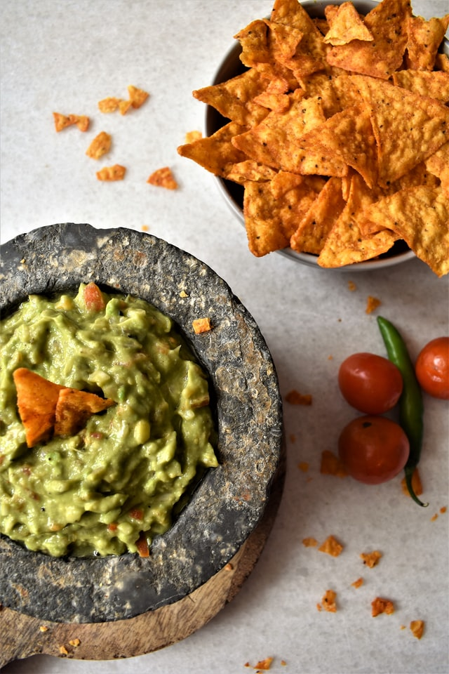

Guacamole

Description
A simple go-to guacamole recipe that leaves you begging for more.
Try it and get addicted!!
Ingredients
- 3 avocados - peeled,pitted, and mashed
- 1 lime, juiced
- 1 teaspoon salt
- 1/2 cup diced onion
- 3 tablespoons chopped fresh cilantro
- 2 roma(plum) tomatoes, diced
- 1 teaspoon minced garlic
- 1 pinch ground cayenne pepper(Optional)
Steps
- In a medium bowl, mash together the avocados, lime juice, and salt
- Mix in onion, cilantro, tomatoes, and garlic.
- Stir in cayenne, pepper.
- Refrigerate 1 hour for best flavour, or serve immediately.